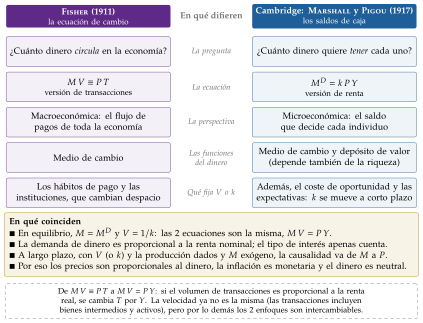
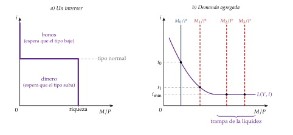
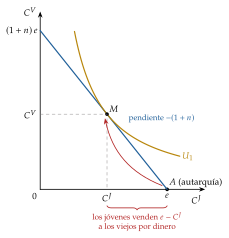
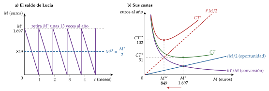
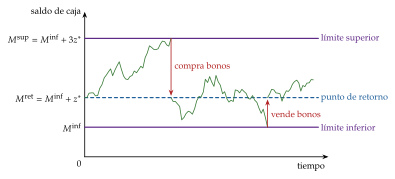
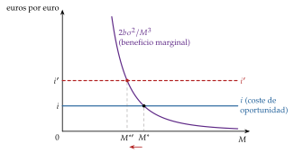
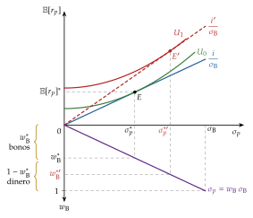
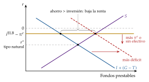
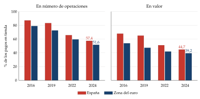

Tema 3.A.35
Teorías de la demanda de dinero. Implicaciones de política económica.
Teoría cuantitativa, Keynes y Friedman, Baumol-Tobin, dinero en la utilidad, Tobin, Cagan, regla de Friedman, señoreaje y una economía sin efectivo.
Exclusivo Material exclusivo de victorgutierrezmarcos.es y la app Oposición TCEE · DCE. Puedes usarlo libremente para tu estudio personal. No se autoriza su incorporación a otras plataformas, aplicaciones o servicios. Condiciones de uso.
Introducción
Enganche:
«Poderoso caballero es don Dinero», escribió Francisco de Quevedo. Hoy, sin embargo, pagamos cada vez menos con él: en la zona del euro, el efectivo era el 72 % de los pagos en tienda en 2019 y el 52 % en 2024; en España, el 83 % y el 57 %.
Y, a la vez, nunca ha habido tantos billetes: en septiembre de 2026 circulaban 1,62 billones de euros en efectivo, casi 5 veces más que en 1999. Se paga menos con billetes, pero se guardan más.
Detrás está la pregunta de esta exposición: ¿por qué queremos tener un papel que no rinde intereses, de qué depende cuánto queremos y qué implica eso para la política económica?
Relevancia:
Para la teoría: la demanda de dinero es la mitad del mercado de dinero. De ella dependen la curva LM y la eficacia relativa de las políticas fiscal y monetaria [ver tema 3.A.5], la transmisión de la política monetaria [ver tema 3.A.37] y el nivel de precios a largo plazo [ver tema 3.A.41].
Para la política: una demanda de dinero estable, que depende de pocas variables y de forma predecible, es la condición para que el dinero influya en la economía de forma previsible. Si lo es, el banco central puede guiar la renta nominal con la cantidad de dinero; si no, tiene que fijar un tipo de interés [ver tema 3.A.36]. Y como el dinero se puede gravar con la inflación, su demanda fija cuánto puede recaudar el Estado imprimiéndolo [ver tema 3.A.39].
Para la actualidad: la digitalización de los pagos, los criptoactivos y el euro digital vuelven a plantear la vieja pregunta de qué es dinero y por qué se acepta.
Contextualización:
El dinero se define por lo que hace, no por lo que es. Cumple 3 funciones [ver tema 3.A.21]:
medio de cambio: con él se paga, y se evita la doble coincidencia de deseos que exige el trueque;1
depósito de valor: traslada poder de compra del presente al futuro;
unidad de cuenta: en él se expresan los precios, las deudas y los contratos.
La demanda de dinero es la cantidad de saldos reales, \(M/P\), que el público desea mantener en lugar de otros activos que rinden más pero son menos líquidos. Su coste de oportunidad es el tipo de interés nominal, \(i\): lo que se deja de ganar por no tener esa riqueza en bonos. Qué se cuenta como dinero depende de la liquidez: en la zona del euro, M1 es el efectivo y los depósitos a la vista; M2 añade los depósitos a plazo de hasta 2 años y los disponibles con preaviso de hasta 3 meses, y M3, los instrumentos negociables a corto plazo.
El papel del dinero preocupa desde Aristóteles, y la relación entre el préstamo y el interés como su coste ocupa a Santo Tomás y a los escolásticos. Pero las teorías explícitas de por qué se guarda dinero son del siglo XX, y su historia tiene 3 etapas:2
la teoría cuantitativa: de la escuela de Salamanca a Hume se intuye que más dinero significa precios más altos; Fisher (1911) y la escuela de Cambridge la convierten en una teoría en la que el dinero sirve sobre todo para pagar;
la demanda de dinero como elección: Keynes (1936) la hace depender del tipo de interés; la síntesis neoclásica formaliza cada uno de sus motivos, y Friedman (1956) la reformula como la demanda de un activo más;3
el dinero en el equilibrio general: Patinkin (1956) pone los saldos reales en la utilidad, pero el modelo de Arrow-Debreu no tiene sitio para el dinero,4 y desde finales de los 50 se le busca una función que lo justifique: depósito de valor entre generaciones, utilidad, pago por adelantado o medio de cambio en una economía con búsqueda.
La exposición abre el bloque del ciclo y las políticas de demanda: es la LM del modelo IS-LM [ver tema 3.A.38] y la base de la instrumentación de la política monetaria [ver tema 3.A.36], de su transmisión [ver tema 3.A.37], del señoreaje [ver tema 3.A.39] y de la inflación [ver tema 3.A.41].
Problemática:
¿Por qué existe una demanda de dinero? La pregunta no es trivial:
si el dinero se trata como un bien, un billete no da utilidad por sí mismo, y nadie demanda lo que no da utilidad;
si se trata como un activo, rinde menos que los bonos, y nadie guardaría un activo dominado por otro.
Si existe, ¿de qué variables depende, con qué sensibilidad y es estable?
¿Qué implica su forma para la política económica: cuánta inflación conviene, qué instrumento debe usar el banco central, cuánto puede financiar el Estado con dinero y hasta dónde pueden bajar los tipos si desaparece el efectivo?
Estructura:
La exposición responde a las 3 preguntas en 3 apartados, que van de por qué existe el dinero a qué determina su demanda y a qué implica para la política:
I. ¿Por qué el dinero? (I): de la teoría cuantitativa a Keynes y Friedman, y por qué se acepta un dinero sin valor intrínseco;
II. ¿Qué determina la cantidad demandada? (II): los modelos según la función del dinero que explican (medio de cambio, depósito de valor, unidad de cuenta) y lo que dicen los datos;
III. Implicaciones de política económica (III): la inflación óptima, la eficacia de la estabilización, el señoreaje y una economía sin efectivo.
Hélène Rey (2016), Breaking the Wall of Global Economic Crises, Falling Walls Conference: https://youtu.
3.A.35. Teorías de la demanda de dinero. Implicaciones de política económica
Introducción2′30″
I. ¿Por qué el dinero? Existencia de la función de demanda de dinero7′30″
1. Aproximación desde la historia del pensamiento económico
2. El dinero fiduciario: credibilidad y confianza
II. ¿Qué determina la cantidad demandada? La demanda de dinero según las funciones del dinero11′30″
1. Aproximación desde la teoría económica
2. Evidencia empírica sobre los determinantes. Hechos estilizados
III. Implicaciones de política económica. Una economía sin dinero en efectivo7′30″
1. Demanda de dinero e inflación óptima
2. Demanda de dinero y eficacia de la política de estabilización
3. Demanda de dinero y política fiscal: señoreaje e hiperinflación
4. Una economía sin dinero en efectivo
Conclusión1′
Reparto del cante: introducción, 2′30″; I, 7′30″ (I.1, 5′30″: teoría cuantitativa, 2′, Keynes, 2′, y Friedman, 1′30″; I.2, 2′); II, 11′30″ (II.1, 10′: Baumol-Tobin con Miller-Orr, 2′30″, Whalen, 0′30″, el dinero en la utilidad, 3′, el tiempo de compra y el pago por adelantado, 1′30″, Tobin, 1′30″, y Cagan, 1′; II.2, 1′30″); III, 7′30″ (III.1, 1′30″; III.2, 2′; III.3, 1′; III.4, 3′), y conclusión, 1′. Lo que no se canta (la nota de Salamanca, las derivaciones, los anexos y los párrafos de profundización) sirve para las preguntas del tribunal.
I. ¿Por qué el dinero? Existencia de la función de demanda de dinero
Empezamos por la pregunta previa: por qué alguien quiere guardar un activo que no rinde intereses.
Conclusión anticipada: la historia del pensamiento responde que por sus funciones, y explica cada vez mejor cuánto dinero se quiere (para pagar, por prudencia, como activo); la teoría moderna añade por qué se acepta un papel sin valor: porque se espera que los demás lo acepten. Por eso el valor del dinero fiduciario descansa en la confianza.
I.1. Aproximación desde la historia del pensamiento económico
La historia del pensamiento da 3 respuestas sucesivas: la teoría cuantitativa, para la que el dinero sirve sobre todo para pagar; Keynes, que lo convierte en un activo cuya demanda depende del tipo de interés, y Friedman, que lo trata como un activo más de la cartera.
I.1.1. La teoría cuantitativa del dinero: Fisher frente a Cambridge
a) Idea
La teoría cuantitativa del dinero sostiene que, a largo plazo, el nivel de precios es proporcional a la cantidad de dinero. El dinero interesa sobre todo como medio de cambio.
Es una idea antigua:
la escuela de Salamanca la formula en el siglo XVI, al explicar la subida de los precios en España con la llegada de los metales de América [ver tema 3.A.1];5
David Hume (1752) la expone en el siglo XVIII y la une al ajuste automático de la balanza comercial; la controversia bullionista (el Bullion Report del 8 de junio de 1810) y la Ley de Peel de 1844, que da la razón a la escuela monetaria (currency school) frente a la escuela bancaria (banking school) de John Stuart Mill, la llevan a la política [ver tema 3.A.2].
A principios del siglo XX la formalizan 2 enfoques, independientes entre sí:
el de Fisher, de la economía en su conjunto, que pone el énfasis en las instituciones de pago;
el de Cambridge, de la decisión de cada individuo, que estudia por qué se quiere tener dinero.
b) Modelo
i) Supuestos
La velocidad del dinero depende de los hábitos de pago y de las instituciones (la frecuencia con que se cobra, la densidad de la población, los transportes), que cambian despacio: se puede tratar como constante.
El volumen de transacciones (o la renta real) lo fija el sector real, a pleno empleo.
La cantidad de dinero es exógena (la fija la autoridad monetaria) y la causalidad va del dinero a los precios.
ii) Desarrollo
Fisher: la ecuación de cambio. Fisher (1911) parte de una identidad, el valor de lo que se paga es igual al valor de lo que se compra: \[M\,V\equiv P\,T, \tag{1}\] con \(M\) el dinero, \(V\) su velocidad de circulación (las veces que cambia de manos cada unidad en el periodo), \(P\) el nivel de precios y \(T\) el volumen de transacciones (aquí \(T\) no son los impuestos). Fisher añade los depósitos, con su propia velocidad.
La ecuación la había escrito antes Simon Newcomb (1885), a quien Fisher dedica el libro; Hume había expresado la relación en palabras.
Con los supuestos, la identidad se vuelve teoría: los precios son proporcionales al dinero. En términos de renta, \(M\,V=P\,Y\), y en equilibrio la demanda de dinero es \(M^D=P\,Y/V\): depende de la renta nominal y no del tipo de interés. El dinero solo sirve para pagar, porque cobros y pagos no coinciden en el tiempo.6
Cambridge: los saldos de caja. Alfred Marshall, en sus declaraciones ante comisiones oficiales y en Marshall (1923), y Pigou (1917) cambian la pregunta: no cuánto dinero circula, sino cuánto quiere tener cada uno. Es el enfoque de los saldos de caja de Cambridge:
\[M^D=k\,P\,Y\quad\Longleftrightarrow\quad\frac{M^D}{P}=k\,Y,\qquad k=\frac{1}{V}\tag{2}\]
con \(k\) la fracción de la renta que se desea guardar en dinero.
Se demanda en términos reales: la demanda nominal es proporcional a la renta nominal y la de saldos reales, a la renta real; si los precios se duplican, se quiere el doble de dinero nominal.
El dinero es también depósito de valor: por eso su demanda depende de la riqueza, que Cambridge supone proporcional a la renta.
\(k\) es una decisión: depende de la comodidad del dinero frente a su coste en rentas perdidas, y a corto plazo puede moverse con los rendimientos de los otros activos y con las expectativas. Es el antecedente directo de Keynes, también de Cambridge.
Equivalencia con Fisher: en equilibrio, \(M=M^D\), y comparando \(M\,V=P\,Y\) con (2), \(V=1/k\). La diferencia está en la lectura: en Fisher, \(V\) la fijan los hábitos de pago; en Cambridge, \(k\) es una decisión de cuánta riqueza guardar en dinero [ver tema 3.A.3].
Fisher y Cambridge: en qué se parecen y en qué se diferencian
Se diferencian en la pregunta y, por tanto, en la lectura de la ecuación. Fisher mira el flujo de pagos de toda la economía y pregunta cuánto dinero circula; Cambridge mira a cada individuo y pregunta cuánto quiere tener. Por eso para Fisher el dinero es solo medio de cambio y la velocidad es un dato de las instituciones de pago, mientras que para Cambridge el dinero es también depósito de valor y \(k\) es una decisión que, a corto plazo, se mueve con el rendimiento de los otros activos y con las expectativas (figura 1).
Se parecen en las conclusiones. En equilibrio, \(V=1/k\) y las 2 ecuaciones son la misma; la demanda de dinero es proporcional a la renta nominal, y a largo plazo, con \(V\) (o \(k\)) y la producción dados y el dinero exógeno, los precios son proporcionales al dinero y el dinero es neutral.
De las transacciones a la renta. Fisher escribe la versión de transacciones de la ecuación de cambio, \(M\,V\equiv P\,T\); la literatura usa casi siempre la versión de renta, \(M\,V=P\,Y\), que supone que el volumen de transacciones es proporcional a la renta real. La velocidad de renta no es la de transacciones (las transacciones incluyen los bienes intermedios y los activos), pero por lo demás los 2 enfoques son intercambiables.

Fuente: elaboración propia a partir de Fisher (1911), Pigou (1917) y Serletis (2007, cap. 7).
iii) Implicaciones
Con \(V\) (o \(k\)) e \(Y\) dados, la cantidad de dinero solo fija el nivel de precios:
la inflación es un fenómeno monetario; en tasas de variación, la ecuación de cambio en términos de renta dice \[\gamma_M+\gamma_V=\pi+\gamma_Y, \tag{3}\] y con \(\gamma_V=0\) y \(\gamma_Y\) dado, cada punto más de crecimiento del dinero es un punto más de inflación;
el dinero es neutral: no afecta a la producción ni al empleo, que se determinan en el sector real (la dicotomía clásica) [ver tema 3.A.21];7
la demanda de dinero depende sobre todo de la renta, aunque Cambridge abre la puerta a otros factores.
Para la política: la monetaria solo mueve los precios, y la fiscal, a pleno empleo, desplaza gasto privado a través del tipo de interés real que fija el mercado de fondos prestables [ver tema 3.A.4].
c) Evidencia empírica
A largo plazo se cumple bien. McCandless y Weber (1995), con datos de 110 países entre 1960 y 1990, hallan una correlación entre el crecimiento del dinero y la inflación de 0,925 con la base monetaria, 0,958 con M1 y 0,950 con M2; en los 21 países de la OCDE, de 0,894, 0,940 y 0,958. Con tantos países y 30 años, el resultado no depende de lo que haya pasado en una región.
En la muestra completa no hay correlación entre el crecimiento del dinero y el de la producción real: es lo que predice la neutralidad.
Es la base empírica de la teoría cuantitativa: un cambio en el crecimiento del dinero acaba en un cambio casi igual de la inflación.
Pero correlación no es causalidad: si el banco central acomoda la inflación que causan otros factores, el dinero crecerá con ella sin causarla; es la causación inversa de Tobin (1970) [ver tema 3.A.36].8
d) Valoración
Es más una teoría de los precios que de la demanda de dinero: supone \(V\) estable y no explica qué determina \(k\).
Y la velocidad no es constante: se mueve con la innovación financiera y con los tipos de interés (II.2). Explicar por qué se guarda dinero, y no solo cuánto circula, es la pregunta de Keynes.
I.1.2. Keynes (preferencia por la liquidez) frente a Friedman (neocuantitativismo)
La preferencia por la liquidez de Keynes (1936)
a) Idea
Cambridge había abierto la puerta a que el tipo de interés y las expectativas afectaran a la demanda de dinero, pero no los incluyó en ella. Keynes (1936) lo hace: el dinero es también un activo que compite con los bonos, y su demanda depende del tipo de interés [ver tema 3.A.4].
b) Modelo
i) Supuestos
2 activos financieros: el dinero, que no rinde, y los bonos a largo plazo, cuyo precio baja cuando sube el tipo de interés (pierden valor porque los nuevos pagan más) [ver tema 3.B.24].
Cada inversor tiene su propia idea del tipo de interés «normal», el que espera que vuelva a fijar el mercado.
ii) Desarrollo
Se demanda dinero por 3 motivos:9
transacción: para los pagos corrientes, porque cobros y pagos no coinciden en el tiempo; aquí Keynes acepta la teoría cuantitativa, y crece con la renta;
precaución: para gastos imprevistos; también crece con la renta. Que responda además al tipo de interés lo mostrará Whalen (1966) (II.1.1);
especulación: es la novedad, y liga el dinero a su función de depósito de valor. Si el tipo de mercado está por debajo del que un inversor cree normal, espera que suba y que el precio de los bonos baje, y guarda su riqueza en dinero para no perder; si está por encima, compra bonos. Cada inversor tiene una demanda en escalón: toda su riqueza en dinero o toda en bonos. Como cada uno tiene su tipo normal, la demanda agregada de dinero especulativo es continua y sube cuando baja el tipo, porque hay más inversores para los que el tipo está por debajo del normal.
Los 2 primeros motivos dependen de la renta, \(L_1(Y)\), y el tercero, del tipo de interés, \(L_2(i)\). En forma lineal, la misma del modelo keynesiano:
\[\frac{M}{P}=L_1(Y)+L_2(i)=k\,Y-h\,i,\qquad k,\,h>0\tag{4}\]
con \(k\) la sensibilidad a la renta y \(h\) al tipo de interés (gráfico 1).
Con \(h=0\) vuelve la demanda de Cambridge: es el caso clásico, una demanda vertical frente al tipo.
Con \(h\to\infty\) la demanda es horizontal: es la trampa de la liquidez (liquidity trap). Con un tipo tan bajo que todos esperan que suba, cualquier dinero de más se atesora y el tipo no baja. Keynes la veía posible, aunque decía no conocer ningún caso. Como dice el refrán, «puedes llevar el caballo al río, pero no obligarlo a beber».

Fuente: elaboración propia a partir de Keynes (1936, caps. 13 y 15). La forma lineal \(k\,Y-h\,i\) no tiene tramo horizontal: la trampa es el límite \(h\to\infty\).
iii) Implicaciones
El tipo de interés es un fenómeno monetario: lo fijan la oferta y la demanda de dinero, \(i=(k\,Y-M/P)/h\), no el ahorro y la inversión [ver tema 3.A.4].10 Desaparece la dicotomía clásica: el dinero llega a la economía real a través del tipo y la inversión.
La demanda de dinero es inestable: depende de las expectativas sobre el tipo de interés, que cambian a menudo.
Para la política, con \(h\) grande la política monetaria mueve poco el tipo: es uno de los 2 eslabones débiles de la transmisión, junto con una inversión que responde poco al tipo [ver tema 3.A.34]. Sus consecuencias se ven en el apartado de las implicaciones (III.2).
c) Valoración
Aporta el motivo especulación y, con él, la sensibilidad de la demanda de dinero al tipo de interés. Pero Keynes no es el primero en ver el dinero como activo: Cambridge ya lo trataba como depósito de valor.
Es un modelo de corto plazo, y cada inversor tiene toda su riqueza en un solo activo: no diversifica, y el modelo no explica por qué se guarda dinero cuando el tipo es el normal. Lo resolverá Tobin (1958) (II.1.2); y los motivos transacción y precaución se fundamentan con los modelos de inventarios (II.1.1).
Universidad de Valladolid, Mercado de activos. Demanda de dinero. Modelo IS-LM: https://www.
El neocuantitativismo de Friedman (1956)
a) Idea
Friedman (1956) reformula la teoría cuantitativa como una teoría de la demanda de dinero, con 2 elementos keynesianos (el dinero es un activo y su demanda es proporcional a la renta) y una diferencia de fondo: el dinero es un bien más, y su demanda no necesita motivos propios. Se demanda como cualquier otro activo, según la riqueza, el rendimiento de las alternativas y las preferencias [ver tema 3.A.5].
Frente a Keynes, para quien el dinero tiene un solo sustituto, y perfecto (los bonos), para Friedman tiene muchos, aunque imperfectos: bonos, acciones y bienes físicos.
b) Modelo
i) Supuestos
El dinero es una de las formas de mantener la riqueza, junto con los bonos, las acciones, los bienes físicos y el capital humano, y se demanda por los servicios que presta, como cualquier activo.
La restricción de la elección es la riqueza total, que se mide por la renta permanente, y el público no tiene ilusión monetaria: lo que demanda son saldos reales.
ii) Desarrollo
La demanda de saldos reales: \[\frac{M^D}{P}=f\Big(\underset{+}{Y^P},\ \underset{-}{r_b-r_m},\ \underset{-}{r_e-r_m},\ \underset{-}{\pi^e-r_m},\ \underset{+}{\overline{W}_H/\overline{W}}\Big), \tag{5}\] con \(Y^P\) la renta permanente, el rendimiento de la riqueza total [ver tema 3.A.33]; \(r_b\), \(r_e\) y \(r_m\) los rendimientos esperados de los bonos, las acciones y el propio dinero; \(\pi^e\) el de los bienes físicos (su revalorización), y \(\overline{W}_H/\overline{W}\) el peso de la riqueza humana, que no se puede vender ni pignorar con facilidad, en la riqueza total. Es una demanda de saldos reales: no depende del nivel de precios.
Es estable: depende sobre todo de la renta permanente, que cambia despacio, y los diferenciales de rendimiento se mueven poco, porque el del dinero sube con los demás (los depósitos se remuneran). Es poco sensible al tipo de interés (\(h\) pequeño), y no hay trampa de la liquidez.
iii) Implicaciones
Si la demanda es estable, la velocidad es predecible y la cantidad de dinero determina la renta nominal: con \(V\) estable en \(M\,V=P\,Y\), controlar \(M\) es controlar \(P\,Y\).
A corto plazo el dinero no es neutral; a largo plazo, sí. Por eso los monetaristas piden una regla de crecimiento constante del dinero, la del k %, \(\gamma_M=\overline{\gamma}_M\), en vez de la discrecionalidad [ver tema 3.A.5].11
Sus consecuencias para la elección entre política fiscal y monetaria se ven en el apartado de las implicaciones (III.2).
c) Valoración
Aporta la demanda de dinero como elección de cartera y la idea de estabilidad, que los datos confirmaron hasta los 70.
Pero la estabilidad se rompió con la innovación financiera de los 70 y los 80 (II.2), y con ella los objetivos monetarios (III.2).
Fraser Institute, Essential Milton Friedman: The Theory of Money and Prices: https://www.
Recapitulando la historia del pensamiento (cuadro 1): la demanda de dinero pasa de depender solo de la renta a depender también del tipo de interés, y la discusión entre Keynes y Friedman se resume en 2 preguntas: cuánto responde al tipo y si es estable.
| Keynes (1936) | Friedman (1956) | |
|---|---|---|
| Sustitutos del dinero | Uno, y perfecto: los bonos | Muchos, imperfectos: bonos, acciones, bienes físicos |
| Variable de escala | Renta corriente | Renta permanente (riqueza) |
| Sensibilidad al tipo | Alta (\(h\) grande); trampa posible | Baja (\(h\) pequeño) |
| Estabilidad | Inestable: depende de las expectativas sobre el tipo | Estable |
| LM | Plana | Inclinada |
| Política preferida | Fiscal | Monetaria, con una regla |
Fuente: elaboración propia a partir de Keynes (1936), Friedman (1956) y Mishkin, Matthews y Giuliodori (2013, cap. 19).
I.2. El dinero fiduciario: credibilidad y confianza
La historia del pensamiento explica cuánto dinero se quiere, pero da por hecho que se quiere. Pasamos a esa pregunta.
La paradoja: el dinero de hoy es fiduciario. No tiene valor intrínseco ni se puede cambiar por oro desde que en 1971 se suspendió la convertibilidad del dólar [ver tema 3.B.20]. Es una deuda del banco central (los billetes y las reservas) o de los bancos (los depósitos) que no da derecho a nada más que a sí misma. ¿Por qué vale un pasivo que no promete nada?
2 puntos de partida:
Menger (1892): el dinero no lo inventó el Estado. Cada uno acepta a cambio el bien más fácil de vender, aunque no lo quiera consumir, porque le ahorra buscar a quien quiera justo lo que ofrece; poco a poco, ese bien se convierte en el medio de cambio de todos. Es una institución que nadie ha diseñado [ver tema 3.A.3] (anexo B).
Hahn (1965): si el dinero no da utilidad ni presta ningún servicio en el modelo, solo vale porque los demás lo aceptan, y siempre es posible que nadie lo acepte. Siempre existe un equilibrio en el que el dinero no vale nada [ver tema 3.A.21].
2 modelos responden a la paradoja, y llegan a la misma conclusión: el valor del dinero descansa en la confianza, y por eso puede haber equilibrios con dinero y sin él.
El dinero como depósito de valor entre generaciones: Samuelson (1958)
a) Idea
Samuelson (1958) se pregunta cómo se ahorra para la vejez en una economía en la que la gente vive 2 periodos, solo produce de joven y lo que produce no se puede guardar. El mercado, por sí solo, no lo permite; un contrato social como el dinero, sí [ver tema 3.A.29]. Es lo que dice el refrán «cuando seas padre, comerás huevos»: el joven entrega hoy sus bienes a cambio de dinero y le llega el turno de consumir cuando, ya viejo, lo gasta.12
b) Modelo
i) Supuestos
En cada periodo nacen \(L_t\) jóvenes, con \(L_{t+1}=(1+n)\,L_t\); cada uno vive 2 periodos.
De joven recibe \(e\) unidades de un bien perecedero y de viejo, nada. Su utilidad es \(u(C^J_t)+\beta\,u(C^V_{t+1})\), con \(C^J_t\) el consumo de joven y \(C^V_{t+1}\) el de viejo.
ii) Desarrollo
Sin dinero, nadie puede ahorrar: el bien no se guarda, los viejos no pueden devolver un préstamo y los acreedores futuros aún no han nacido. El único equilibrio es la autarquía: \(C^J=e\), \(C^V=0\).
Con dinero: los primeros viejos tienen \(M\) unidades de un papel sin valor intrínseco; cada joven vende parte de su dotación a cambio de dinero y de viejo lo gasta. Con \(M\) constante, en un estado estacionario los precios caen al ritmo de la población, \(P_{t+1}/P_t=1/(1+n)\), y el dinero rinde \(1+n\) en términos reales: el «tipo de interés biológico» (gráfico 2).

Fuente: elaboración propia a partir de Samuelson (1958) y Mas-Colell, Whinston y Green (1995, § 20.H).
iii) Implicaciones
El dinero mejora a todos: el equilibrio monetario mejora a todas las generaciones frente a la autarquía, pero el no monetario existe siempre. El dinero vale porque el joven confía en que el sistema dure hasta que él sea viejo: su valor es una burbuja que descansa en la confianza.
La demanda de dinero es una demanda de ahorro: depende del rendimiento real del dinero, \(1/(1+\pi)\), con efectos renta y sustitución de signo contrario, y su respuesta a la inflación es ambigua.13
Para la política: si se guarda dinero, conviene que pierda poco valor; la inflación óptima es baja, incluso negativa (III.1).
c) Valoración
Es la explicación más sencilla del valor del dinero fiduciario como depósito de valor. Pero falla en cuanto hay otro activo que rinde interés: nadie guardaría un papel que pierde valor con la inflación teniendo un bono. Es la paradoja del dinero dominado: el modelo explica la demanda de un activo seguro, no la de dinero, que se quiere porque sirve para pagar.
El dinero como medio de cambio en una economía con búsqueda: Kiyotaki y Wright (1989, 1993)
a) Idea
Los modelos de búsqueda vuelven a la idea de Menger: el dinero sirve para evitar la doble coincidencia de deseos del trueque. El trueque exige que cada uno tenga justo lo que el otro quiere y quiera justo lo que el otro tiene, y eso casi nunca ocurre.
Sustituyen el subastador walrasiano por intercambios descentralizados entre parejas que se encuentran al azar. Así, alguien acepta dinero solo si confía en que otros lo aceptarán después.
b) Modelo
i) Supuestos
Cada agente produce un bien y quiere consumir otro distinto; en cada periodo se encuentra al azar con otro agente.
Sea \(x\) la probabilidad de que un agente cualquiera produzca lo que uno quiere consumir (aquí \(x\) no es una cantidad de bien). Para el trueque hace falta la doble coincidencia, con probabilidad \(x^2\); con dinero basta la coincidencia simple, con probabilidad \(x\), siempre que el otro acepte el dinero.
Cada agente está en uno de 3 estados: produciendo su bien, con un bien buscando con quién cambiarlo, o con dinero buscando una ocasión de comprar.
ii) Desarrollo
Aceptar dinero conviene si la probabilidad de gastarlo (coincidencia simple, por la probabilidad de que el otro lo acepte) supera la de encontrar un trueque. Esa probabilidad depende de lo que hagan los demás: si todos aceptan el dinero, a cada uno le conviene aceptarlo; si nadie lo acepta, a nadie le conviene.
Hay, por tanto, equilibrios múltiples: uno sin dinero, en el que nadie lo acepta; uno monetario puro, en el que todos lo aceptan, y uno mixto, en el que se acepta con probabilidad \(x\). En el modelo de 1989, con dinero mercancía, el bien que acaba sirviendo de medio de cambio puede ser el más barato de almacenar (equilibrio fundamental) o el que todos creen que los demás aceptarán (equilibrio especulativo).
iii) Implicaciones
El dinero se demanda para evitar la doble coincidencia y en función de la confianza. Con dinero se cierran intercambios que el trueque no permite, y el equilibrio monetario es mejor cuanto más difícil es la doble coincidencia (\(x\) pequeño), siempre que la gente confíe en él.
Para la política, la credibilidad del emisor es un activo: si el público deja de creer que los demás aceptarán el dinero (porque espera que pierda valor deprisa), deja de quererlo y la profecía se cumple. Es lo que ocurre en las hiperinflaciones (III.3), y explica por qué una divisa nueva o un criptoactivo pueden no circular aunque sean técnicamente mejores (III.4).
c) Extensiones
En estos modelos cada agente tiene 0 o 1 unidad de dinero: no dicen cuánto se demanda. Lagos y Wright (2005) añaden un mercado centralizado en el que se ajustan las tenencias, y obtienen una demanda de dinero que cae con el tipo de interés nominal, como en los modelos del apartado siguiente.
d) Valoración
Da la explicación más profunda de por qué existe el dinero, a costa de modelos muy abstractos y difíciles de llevar a los datos. Por eso la macroeconomía usa, para la demanda de dinero, formas más sencillas que suponen que el dinero sirve para pagar.
El documento de trabajo de Kiyotaki y Wright que dio lugar al artículo de 1993: https://www.
Recapitulando el apartado: el dinero existe porque resuelve problemas que el mercado sin dinero no resuelve (la doble coincidencia, el ahorro entre generaciones), y vale porque se confía en que los demás lo aceptarán. Una vez visto por qué existe una demanda de dinero, pasamos a qué la determina.
II. ¿Qué determina la cantidad demandada? La demanda de dinero según las funciones del dinero
Una vez visto por qué existe una demanda de dinero, pasamos a qué la determina. Todas las teorías dan, en el fondo, una función del mismo tipo: \[\frac{M^D}{P}=L\big(\underset{+}{\text{escala}},\ \underset{-}{\text{coste de oportunidad}}\big), \tag{6}\] con una variable de escala (la renta, el consumo, la riqueza) y un coste de oportunidad (el tipo de interés nominal o, en las hiperinflaciones, la inflación esperada). Es una demanda de saldos reales: si los precios se duplican, se quiere el doble de dinero nominal.
Conclusión anticipada: cada función del dinero da una demanda distinta, pero casi todas coinciden en que crece con el gasto, con elasticidad menor que 1, y cae con el tipo de interés nominal, su coste de oportunidad. Lo que las separa es la sensibilidad al tipo y la estabilidad, que es lo que importa para la política.
II.1. Aproximación desde la teoría económica
La síntesis neoclásica fundamenta los 3 motivos de Keynes con modelos de decisión individual: la transacción, con un problema de inventarios; la precaución, con el mismo problema con pagos inciertos, y la especulación, con un problema de cartera. Después, la macroeconomía de equilibrio general mete el dinero en modelos dinámicos dándole una función. Los ordenamos según la función del dinero que explican.
II.1.1. El dinero como medio de cambio
El motivo transacción: Baumol (1952) y Tobin (1956)
a) Idea
Baumol (1952) trata el dinero para pagar como un inventario: igual que una empresa decide cuántas existencias tener comparando lo que cuesta pedir con lo que cuesta almacenar, el individuo decide cuánto efectivo llevar. Tobin (1956) llega por separado al mismo resultado, y su título resume la novedad: incluso la demanda de dinero para transacciones depende del tipo de interés. Es el mismo modelo que se usa para la tesorería de la empresa [ver tema 3.B.2].
b) Modelo
i) Supuestos
El individuo recibe al principio del periodo un ingreso nominal \(Y\) y lo gasta de forma uniforme a lo largo del periodo.
Puede guardarlo en dinero, que no rinde, o en bonos (una cuenta remunerada), que rinden \(i\) en el periodo.
Cada vez que pasa bonos a dinero paga un coste fijo \(b\), en euros o en tiempo (comisiones, ir al cajero), que no depende de la cantidad (aquí \(b\) no es la sensibilidad de la inversión al tipo del modelo IS-LM).
Hace \(n\) retiradas iguales de \(M=Y/n\) euros: su saldo baja de \(M\) a 0 en línea recta antes de cada retirada, en «dientes de sierra», y su saldo medio, que es su demanda de dinero, es \(M/2\) (gráfico 3, panel a).
ii) Desarrollo
Elige \(M\) para minimizar el coste total: el coste de conversión, \(b\) por cada una de las \(Y/M\) retiradas, más el coste de oportunidad, los intereses que no cobra por su saldo medio: \[\min_{M}\ CT(M)=b\,\frac{Y}{M}+i\,\frac{M}{2}.\]
La condición de primer orden, \(-b\,Y/M^2+i/2=0\), da la retirada óptima, y la de segundo orden se cumple, \(CT''(M)=2\,b\,Y/M^3>0\). La demanda de dinero es el saldo medio:
\[M^*=\sqrt{\frac{2\,b\,Y}{i}},\qquad M^D=\frac{M^*}{2}=\sqrt{\frac{b\,Y}{2\,i}}\tag{7}\]
Gráficamente, \(M^*\) está en el mínimo de la curva de costes totales en U (gráfico 3, panel b). Como dice el refrán, «en el término medio está la virtud»: ni ir al cajero cada día ni llevar todo el sueldo encima.
Sin ilusión monetaria: si \(b\) e \(Y\) suben con los precios, \(M^D/P=\sqrt{(b/P)\,(Y/P)/(2\,i)}\): la demanda de saldos reales depende de la renta real y del coste real de cada retirada.
La solución de esquina: si \(Y\leq 2\,b/i\), la retirada óptima sería mayor que todo el ingreso, y el individuo lo guarda todo en dinero; quien gana poco no tiene bonos.

iii) Implicaciones
Elasticidades: \(1/2\) respecto a la renta, \(-1/2\) respecto al tipo y \(1/2\) respecto al coste de cada retirada. Hay economías de escala: quien gasta el doble no necesita el doble de efectivo.
La velocidad es endógena: \(V=Y/M^D=\sqrt{2\,i\,Y/b}\) sube con el tipo de interés y con la renta. No es una constante, como suponía Fisher, sino una decisión.
En el óptimo, los 2 costes son iguales, y el coste total es \(CT^*=\sqrt{2\,b\,i\,Y}\): crece con el tipo nominal. Es el coste de suela de zapato (shoe-leather cost) de la inflación (III.1).
La innovación financiera (cajeros, tarjetas, banca en línea) baja \(b\) y, con él, la demanda de dinero: cuando cambia la tecnología de pagos, la demanda se desplaza (II.2).
Para la política: fundamenta que la LM tenga pendiente positiva y finita, porque también el dinero para pagar responde al tipo; y con elasticidad renta menor que 1, la demanda agregada depende de cómo se reparte la renta.
Pensemos en un agente que cobra 21.600 euros al año, paga \(b=2\) euros por cada visita al cajero y deja el resto en una cuenta al \(i=3\) %:
su retirada óptima es \(M^*=\sqrt{2\cdot 2\cdot 21.600/0{,}03}\approx 1.697\) euros: va al cajero unas 13 veces al año, lleva de media unos 849 euros y su dinero da unas 25 vueltas al año;
le cuesta \(CT^*=\sqrt{2\cdot 2\cdot 0{,}03\cdot 21.600}\approx 51\) euros al año, la mitad en comisiones y la otra mitad en intereses perdidos;
si el tipo se multiplica por 4, hasta el 12 %, su retirada se divide por 2 (unos 849 euros, 25 veces al año), su saldo medio baja a unos 424 euros y su coste se duplica, hasta unos 102 euros.
c) Extensiones: pagos aleatorios (Miller y Orr, 1966)
Miller y Orr (1966) llevan el modelo a una empresa cuyos cobros y pagos netos de cada día son aleatorios: su saldo de caja sigue un paseo aleatorio, con varianza diaria \(\sigma^2\).14
La regla óptima es una banda (gráfico 4): la empresa fija un saldo mínimo, \(M^{\mathrm{inf}}\), y deja que la caja se mueva libremente entre él y un límite superior, \(M^{\mathrm{sup}}=M^{\mathrm{inf}}+3z^*\). Si toca el límite superior, compra bonos hasta volver al punto de retorno, \(M^{\mathrm{ret}}=M^{\mathrm{inf}}+z^*\); si toca el inferior, vende bonos hasta volver a él. Con \(b\) el coste de cada operación e \(i\) el tipo diario,
\[z^*=\left(\frac{3\,b\,\sigma^2}{4\,i}\right)^{1/3}\tag{8}\]
y el saldo medio es \(M^{\mathrm{inf}}+\tfrac{4}{3}\,z^*\). Solo el saldo mínimo lo fija la empresa a su criterio; el punto de retorno y el límite superior son óptimos.
Implicaciones: la demanda de dinero tiene elasticidad \(-1/3\) respecto al tipo y \(1/3\) respecto al coste de cada operación y a la varianza de los flujos: la incertidumbre aumenta la demanda de dinero, y sigue habiendo economías de escala.

Fuente: elaboración propia a partir de Miller y Orr (1966).
d) Evidencia empírica
La elasticidad renta de M1 en Estados Unidos después de la guerra es de 0,5, la de Baumol y Tobin; con agregados más amplios y con la riqueza como variable de escala sale mayor.
Con datos de 38 países, algunos de más de un siglo, la elasticidad al tipo de interés de M1 está entre 0,3 y 0,6, un intervalo que contiene el 0,5 de la raíz cuadrada.
e) Valoración
Es el primer modelo que da a la demanda de dinero una forma funcional derivada de una decisión, con elasticidades que se pueden contrastar.
Pero es individual y parcial, supone certeza y no explica por qué hace falta dinero para pagar: lo da por hecho. Lo primero lo resuelve el motivo precaución; lo segundo, los modelos de equilibrio general.
El motivo precaución: Whalen (1966)
a) Idea
Con pagos inciertos, el dinero es un seguro: si en el periodo los pagos netos superan el efectivo, hay que vender bonos con prisa y pagar un coste \(b\) (una penalización, una venta a mal precio; aquí \(b\) es el coste de quedarse sin liquidez). Es la respuesta del motivo precaución al tipo de interés que Keynes no recogía (I.1.2). Es el dinero que se guarda «por si las moscas».
b) Modelo
i) Supuestos
Los pagos netos del periodo tienen media nula y varianza \(\sigma^2\). Por la desigualdad de Chebyshev, la probabilidad de quedarse sin efectivo con un saldo \(M\) es como mucho \(\sigma^2/M^2\), y el individuo prudente la toma como estimación.
ii) Desarrollo
Minimiza la suma del coste de oportunidad y del coste esperado de quedarse sin liquidez: \[\min_{M}\ i\,M+b\,\frac{\sigma^2}{M^2},\] y la condición de primer orden, \(i-2\,b\,\sigma^2/M^3=0\), da el saldo de precaución:
\[M^*=\left(\frac{2\,b\,\sigma^2}{i}\right)^{1/3}\tag{9}\]
Guarda dinero hasta que el ahorro esperado por el último euro, \(2\,b\,\sigma^2/M^3\), decreciente, iguala su coste de oportunidad, \(i\), constante (gráfico 5).

Fuente: elaboración propia a partir de Whalen (1966). Si sube el tipo, la recta del coste marginal sube y el saldo óptimo baja; si aumenta la incertidumbre, la curva del beneficio marginal se desplaza a la derecha.
iii) Implicaciones
Elasticidad \(-1/3\) respecto al tipo y \(1/3\) respecto al coste de la falta de liquidez y a la varianza: más incertidumbre, más dinero.
Efecto de la renta: la demanda crece con la dispersión de los pagos y, por ella, con la renta. Si la renta crece porque hay más pagos del mismo tamaño, la elasticidad es 1/3; si crece porque cada pago es mayor, 2/3.15
c) Extensiones
Goldman (1974) explica el motivo precaución como el valor de la flexibilidad: el dinero permite aprovechar oportunidades que no se conocen al decidir la cartera.
d) Valoración
Da fundamento al motivo precaución de Keynes y le añade lo que le faltaba: también este dinero responde al tipo de interés, y más incertidumbre significa más demanda de dinero, lo que explica que se dispare en las crisis.
Pero la cota de Chebyshev es una estimación prudente, no la probabilidad verdadera, y el coste de quedarse sin liquidez es un supuesto; como en Baumol-Tobin, se da por hecho que hace falta dinero para pagar.
El dinero en la función de utilidad: Sidrauski (1967)
a) Idea
Los modelos de inventarios dan una demanda de dinero, pero en equilibrio parcial y suponiendo que hace falta dinero para pagar. En un modelo dinámico de equilibrio general, el dinero solo tiene valor si se le da una función que el modelo sin dinero no tenga [ver tema 3.A.21]. La forma más directa es ponerlo en la utilidad (MIU, money in the utility function): si el dinero ahorra tiempo y molestias al pagar, ese servicio se resume poniendo los saldos reales en la utilidad, como un bien más.
Patinkin (1956) ya los había puesto para romper la dicotomía clásica [ver tema 3.A.4]; Sidrauski (1967)16 los lleva al modelo de crecimiento de Ramsey, Cass y Koopmans (RCK) [ver tema 3.A.43]17 para responder a una pregunta: ¿afecta el crecimiento del dinero, y con él la inflación, a la acumulación de capital?
Parte de un modelo sin dinero. En el de RCK, hogares que eligen cuánto consumir y cuánto ahorrar y empresas que maximizan beneficios se encuentran en una economía descentralizada, con precios y un equilibrio competitivo; pero nada sirve para pagar, y el único activo es el capital, que rinde un interés real: no hay ningún activo con un rendimiento nominal nulo. Sidrauski le añade el dinero con el menor cambio posible: los saldos reales entran en la utilidad y en la restricción presupuestaria. Su objetivo no es tanto la demanda de dinero como la inflación en un modelo de equilibrio general, pero de él sale una demanda de dinero.
Del modelo de RCK al de Sidrauski, paso a paso
Paso 1: lo que tiene el modelo de RCK [ver tema 3.A.43]:
hogares que viven infinitos periodos y reparten su renta entre consumo y ahorro, sujetos a una restricción presupuestaria;
empresas que combinan el capital y el trabajo para producir y maximizan beneficios;
los 2 son racionales y se relacionan en una economía descentralizada, con un equilibrio competitivo y una senda hacia él; hay transacciones y precios (del consumo, el salario y el rendimiento del capital).
Paso 2: lo que le falta, el dinero:
se intercambian bienes y factores, pero no hay un medio de pago: el modelo no dice con qué se paga;
tampoco hay un depósito de valor monetario: el único activo es el capital, con su interés real, y ninguno rinde un 0 % nominal;
sin dinero, el modelo no dice nada de la inflación ni de la demanda de dinero. Patinkin (1956) había puesto los saldos reales en la utilidad para romper la dicotomía clásica, pero en un modelo estático; el primer modelo dinámico completo es el de Sidrauski.
Paso 3: los supuestos sobre los hogares:
muchos hogares, cada uno pequeño frente a la economía: toman los precios como dados;
idénticos y sin crecimiento de la población: se trabaja con un hogar representativo;
racionales, con horizonte infinito y previsión perfecta: maximizan la suma de la utilidad de cada periodo, descontada con \(\beta\);
productores (hogares «Robinson»): son dueños del capital y producen con él, así que el problema de la empresa y el del hogar caben en una sola restricción;
su utilidad es creciente y estrictamente cóncava en el consumo y en los saldos reales: con el consumo dado, más dinero da más utilidad. El modelo no dice para qué sirve el dinero, pero sí que es un depósito de valor, porque el de ayer es un recurso de hoy.
Paso 4: la restricción presupuestaria:
recursos: la producción, el capital que queda tras la depreciación, la transferencia del Estado y el dinero de ayer, cuyo valor real erosiona la inflación (si hay bonos, también lo que rinden);
empleos: el consumo, el capital de mañana y el dinero que se guarda.
Paso 5: lo que sale:
de las condiciones de primer orden, la relación marginal de sustitución entre dinero y consumo se iguala a su coste relativo (10). Los 2 cuestan el interés de los bonos, pero consumir cuesta más: el euro gastado en consumo no vuelve, y el que se guarda en dinero se recupera mañana, porque el dinero entra en los recursos;
con utilidad separable, en el estado estacionario el capital y el consumo se determinan sin la condición del dinero: es la superneutralidad;
es la demanda del hogar representativo: para pasar a la agregada hacen falta preferencias de la forma polar de Gorman [ver tema 3.A.8].
b) Modelo
i) Supuestos
Un hogar representativo que vive infinitos periodos, con previsión perfecta, población constante y trabajo inelástico, que produce con su capital, \(f(K_{t-1})\), y lo deprecia a la tasa \(\delta\).
Su utilidad depende del consumo, \(C_t\), y de los saldos reales, \(m_t\equiv M_t/P_t\), con \(u_C>0\), \(u_m>0\) y concavidad; descuenta el futuro con \(\beta\equiv 1/(1+\rho)\).
La cantidad de dinero crece a la tasa \(\gamma_M\), y el Estado devuelve el señoreaje como una transferencia de suma fija (\(T_t<0\), un impuesto negativo). La inflación es \(1+\pi_t\equiv P_t/P_{t-1}\).
ii) Desarrollo
El dinero de ayer llega a hoy con su valor real erosionado por la inflación, \(m_{t-1}/(1+\pi_t)\). El problema es: \[\begin{array}{rl}\displaystyle \max_{\{C_t,\,K_t,\,m_t\}} & \displaystyle \sum_{t=0}^{\infty}\beta^t\,u(C_t,m_t) \\ \text{s.a.} & C_t+K_t+m_t=f(K_{t-1})+(1-\delta)\,K_{t-1}-T_t+\dfrac{m_{t-1}}{1+\pi_t}\end{array}\]
Las condiciones de primer orden (anexo A) igualan la utilidad marginal del consumo a la de ahorrar en capital, que rinde \(1+r_t=f'(K_t)+1-\delta\), y la del dinero a lo que cuesta guardarlo. Con la ecuación de Fisher, \(1+i_t\equiv(1+r_t)(1+\pi_{t+1})\) [ver tema 3.A.3], se resumen en:
\[\frac{u_m(C_t,m_t)}{u_C(C_t,m_t)}=\frac{i_t}{1+i_t}\tag{10}\]
Interpretación: la relación marginal de sustitución entre dinero y consumo se iguala a su precio relativo. Guardar un euro en dinero en lugar de en bonos cuesta los intereses, \(i_t\), que se cobrarían mañana; consumir hoy un euro cuesta \(1+i_t\) euros de mañana. Como en el problema del consumidor con 2 bienes, la relación subjetiva se iguala a la de mercado.
Ejemplo: con \(u=\ln C_t+\ln m_t\), la demanda de dinero es \(m_t=C_t\,(1+i_t)/i_t\): elasticidad 1 respecto al consumo y \(-1/(1+i_t)\), casi \(-1\), respecto al tipo.
iii) Implicaciones
La demanda de dinero, \(m_t=L(C_t,i_t)\), crece con el consumo (la variable de escala es el gasto, no la renta) y baja con el tipo nominal.18 Dice el refrán que «el dinero no da la felicidad»; en este modelo, sí, y por eso hay que tomarlo como un atajo.
Superneutralidad: en el estado estacionario, la ecuación de Euler da \(f'(K^*)=\rho+\delta\), y el consumo es \(C^*=f(K^*)-\delta\,K^*\): ni el capital ni el consumo dependen de \(\gamma_M\). Con los saldos reales constantes, \(\pi=\gamma_M\): más crecimiento del dinero sube la inflación y el tipo nominal y reduce los saldos reales, \(m^*\), pero no la producción. El dinero es superneutral, y la inflación cuesta bienestar solo porque se tiene menos dinero.
La cantidad óptima de dinero: como imprimir dinero no cuesta casi nada, el óptimo es saciar la demanda, \(u_m=0\), lo que exige \(i=0\): es la regla de Friedman (III.1).
c) Extensiones
Con trabajo elástico y una utilidad no separable, la inflación cambia la oferta de trabajo y la superneutralidad se pierde.
En la nueva economía keynesiana, con utilidad separable, la demanda de dinero es una ecuación aparte que solo dice cuánto dinero hace falta para el tipo que fija el banco central: se puede ignorar, y el modelo se resuelve «sin dinero» (cashless), como propuso Woodford (2003) [ver tema 3.A.7].19 Esa economía «sin dinero» no es la economía sin efectivo de este tema (III.4): en ella el dinero solo es unidad de cuenta.
d) Valoración
A favor: es sencillo, da una demanda de dinero positiva en equilibrio general y permite comparar el bienestar con distintas inflaciones.
En contra: supone lo que había que explicar. Un billete no se consume: según el modelo, tener dinero da utilidad aunque no se use nunca para pagar, y las derivadas que deciden los resultados (\(u_m\), \(u_{Cm}\)) no tienen fundamento. Los modelos de costes de transacción se lo dan, y Feenstra (1986) demuestra que son equivalentes: poner el dinero en la utilidad equivale a que reduzca unos costes de liquidez de la restricción presupuestaria. El MIU es así una forma reducida.
El dinero y los costes de transacción: el tiempo de compra y el pago por adelantado
a) Idea
En lugar de suponer que el dinero da utilidad, estos modelos dicen cómo la da: ahorra tiempo al comprar o es imprescindible para comprar.
Clower (1967) resume la economía monetaria en una idea: el dinero compra bienes y los bienes compran dinero, pero los bienes no compran bienes [ver tema 3.A.21].
b) Modelo
i) Supuestos
Tiempo de compra (shopping time): Saving (1971) propone la idea y McCallum y Goodfriend (1987) la llevan al equilibrio general. El hogar reparte una unidad de tiempo entre el trabajo, \(L_t\), pagado al salario real \(w_t\), el ocio y el tiempo de compra, \(\psi(C_t,m_t)\), que crece con el consumo, \(\psi_C>0\), y baja con los saldos reales, \(\psi_m<0\), cada vez menos. Su utilidad es \(u\big(C_t,\ 1-L_t-\psi(C_t,m_t)\big)\): el dinero no da utilidad por sí mismo.
Pago por adelantado (cash in advance, CIA): Lucas (1980) lleva la idea de Clower a un modelo de equilibrio general.20 La utilidad es \(u(C_t,\ 1-L_t)\), sin dinero, y el consumo hay que pagarlo con el dinero que se tiene: \[C_t\leq m_t. \tag{11}\] Svensson (1985) fija el orden en que se abren los mercados, de modo que se paga con el dinero de antes de abrir el de activos.
ii) Desarrollo
Tiempo de compra: se guarda dinero hasta que el valor del tiempo que ahorra el último euro, medido al salario, iguala su coste de oportunidad,21
\[-\,w_t\,\psi_m(C_t,m_t)=\frac{i_t}{1+i_t}\tag{12}\]
Pago por adelantado: si el tipo nominal es positivo, nadie guarda más dinero del que va a gastar, la restricción (11) se cumple con igualdad y, en el estado estacionario,
\[m=C,\qquad \frac{u_{\text{ocio}}}{u_C}=\frac{w}{1+i}\tag{13}\]
iii) Implicaciones
Tiempo de compra: la demanda de dinero, \(m_t=L(C_t,i_t,w_t)\), crece con el consumo y con el salario (el tiempo vale más) y baja con el tipo. Si a un agente cada visita al cajero le cuesta un cuarto de hora de su tiempo, y no una comisión, su \(b\) de Baumol-Tobin (7) sube con su salario, y su demanda de dinero, con su renta, en la misma proporción. Sustituyendo la restricción de tiempo en la utilidad queda una función de \(C_t\), \(L_t\) y \(m_t\): el MIU es la forma reducida de este modelo.
Pago por adelantado: la demanda de dinero es el gasto, la velocidad es 1 por periodo y la variable de escala es el consumo: es la teoría cuantitativa con fundamento.
La inflación grava el consumo frente al ocio: para consumir hay que haber tenido el dinero, y eso cuesta el tipo nominal; el precio efectivo del consumo frente al ocio es \(1+i\). Más inflación, menos trabajo y menos producción: el dinero no es superneutral. Cooley y Hansen (1989) usan la restricción de pago por adelantado para medir el coste de la inflación en un modelo de ciclo real, y el dinero sigue siendo casi neutral [ver tema 3.A.42].
Con bienes de crédito, la relación marginal de sustitución entre el bien que se paga en efectivo y el que se paga a crédito es \(1+i\): con más inflación se paga más a crédito, la velocidad sube y la demanda vuelve a depender del tipo.
c) Valoración
Explican por qué el dinero es útil, pero la función \(\psi\) es tan arbitraria como la utilidad del dinero, y en la CIA qué se paga con dinero lo fija el modelo, no los agentes; en la versión básica la velocidad es constante, contra los datos. Es un ejemplo de la defensa metodológica de Friedman (1953): un supuesto irreal y sencillo, el dinero en la utilidad, predice lo mismo que uno más realista.
Recapitulando el medio de cambio: según el modelo, la escala es la renta o el consumo, y el coste, el tipo nominal; todos dan el mismo signo y difieren en la sensibilidad y en la explicación de por qué se usa el dinero. Los modelos de búsqueda (I.2) explican cuándo se usa.
II.1.2. El dinero como depósito de valor
La cartera de Tobin (1958)
a) Idea
En Keynes, cada inversor tiene toda su riqueza en dinero o toda en bonos. Tobin (1958) explica la preferencia por la liquidez como una conducta frente al riesgo: el dinero es el activo seguro de una cartera, y se combina con los bonos para diversificar. Aplica la teoría de carteras de Markowitz22 [ver tema 3.B.23] y la aversión al riesgo [ver tema 3.A.10]. Es la vieja regla de «no poner todos los huevos en la misma cesta».
b) Modelo
i) Supuestos
El inversor reparte su riqueza, \(\overline{W}\), entre dinero, que no rinde ni tiene riesgo, y bonos perpetuos, que pagan el tipo \(i\) más una ganancia de capital aleatoria, \(\tilde g\), de media nula y desviación típica \(\sigma_{\mathrm B}\) (aquí \(\tilde g\) no es el progreso técnico).
Es averso al riesgo: le importan la rentabilidad esperada de su cartera, \(\mathbb{E}[r_p]\), que es un bien, y su riesgo, \(\sigma_p\), que es un mal. Pone en bonos una fracción \(w_{\mathrm B}\) (aquí \(w\) no es el salario).
ii) Desarrollo
La rentabilidad de la cartera es \(r_p=w_{\mathrm B}\,(i+\tilde g)\), así que \(\mathbb{E}[r_p]=w_{\mathrm B}\,i\) y \(\sigma_p=w_{\mathrm B}\,\sigma_{\mathrm B}\). Eliminando \(w_{\mathrm B}\), las carteras posibles forman la recta \[\mathbb{E}[r_p]=\frac{i}{\sigma_{\mathrm B}}\,\sigma_p, \tag{14}\] cuya pendiente es el precio del riesgo.
El inversor elige el punto en que una curva de indiferencia, creciente y convexa porque es averso al riesgo, es tangente a esa recta: su relación marginal de sustitución entre riesgo y rentabilidad se iguala a \(i/\sigma_{\mathrm B}\). El cuadrante de abajo traduce el riesgo elegido en la cartera: \(w^*_{\mathrm B}=\sigma^*_p/\sigma_{\mathrm B}\), y la demanda de dinero es \(M^D=(1-w^*_{\mathrm B})\,\overline{W}\) (gráfico 6).

Fuente: elaboración propia a partir de Tobin (1958). Arriba, la recta de carteras posibles y la curva de indiferencia; abajo, el riesgo en función de la fracción en bonos. Si sube el tipo, la recta gira hacia arriba.
iii) Implicaciones
Diversificación: se tienen a la vez dinero y bonos. La demanda de dinero crece con la riqueza, con el riesgo de los bonos y con la aversión al riesgo.
El tipo de interés: si sube, la recta gira hacia arriba y hay 2 efectos: el de sustitución (los bonos rinden más por unidad de riesgo y se compran más: menos dinero) y el de renta (se puede lograr la misma rentabilidad con menos riesgo: más dinero, si el inversor es muy averso). Tobin supone que domina el primero: la demanda de dinero baja con el tipo, como en Keynes, sin necesidad de un tipo «normal».
Para la política: la demanda de dinero es una decisión de cartera, y la política monetaria actúa cambiando los rendimientos relativos de todos los activos, no solo un tipo de interés [ver tema 3.A.37]. Y en las crisis, cuando sube el riesgo percibido, se dispara la demanda de activos seguros y líquidos: el banco central tiene que dar la liquidez que se le pide.
c) Valoración
Da fundamento a la sensibilidad de la demanda de dinero al tipo y es la base de la teoría de carteras de los activos financieros.
Pero el dinero está dominado: los depósitos a plazo o las letras del Tesoro son tan seguros como el dinero y rinden más. El modelo explica la demanda de activos seguros, no la de dinero; y en términos reales el dinero tampoco está libre de riesgo, porque la inflación lo erosiona.
II.1.3. El dinero como unidad de cuenta
La demanda de dinero en las hiperinflaciones: Cagan (1956)
a) Idea
La función de unidad de cuenta se ve cuando falla. En una hiperinflación, los precios dejan de expresarse en la moneda nacional, se indexan o se fijan en otra divisa, y el público se deshace del dinero en cuanto lo cobra.
b) Modelo
i) Supuestos
Cagan (1956) estudia 7 hiperinflaciones europeas de entreguerras y de posguerra, a partir del mes en que los precios suben más de un 50 %. En ellas, la renta y el tipo de interés real cambian poco frente a la inflación, así que la demanda de saldos reales depende solo de la inflación esperada.
Las expectativas son adaptativas, en tiempo continuo: \(\dot\pi^e=\gamma\,(\pi-\pi^e)\), con \(\gamma>0\) la velocidad de ajuste.
ii) Desarrollo
La demanda de saldos reales es
\[\frac{M^D_t}{P_t}=\zeta\,e^{-\alpha\,\mathbb{E}_t[\pi_{t+1}]},\qquad \zeta,\ \alpha>0\tag{15}\]
con \(\alpha\) la semielasticidad de la demanda a la inflación esperada.
Sargent y Wallace (1973) hacen racionales las expectativas, y entonces el nivel de precios de hoy depende de toda la senda esperada del dinero: un anuncio creíble de que el dinero dejará de crecer baja los precios hoy.
iii) Implicaciones
En estado estacionario, la inflación es el crecimiento del dinero, \(\pi=\gamma_M\).
La demanda de dinero pone un límite a lo que el Estado puede recaudar imprimiéndolo (III.3); y si las expectativas se ajustan muy deprisa, la inflación puede dispararse sin que el dinero se acelere [ver tema 3.A.41].
El dinero fiduciario es frágil: si se pierde la confianza en el emisor, su demanda se hunde y la inflación se alimenta sola.
c) Evidencia empírica
La función se ajusta bien a las 7 hiperinflaciones; pero en casi todas la inflación media superó la que maximiza el señoreaje, \(1/\alpha\): el Estado imprimía más dinero del que le convenía para recaudar.
d) Valoración
Es la demanda de dinero que se usa para el señoreaje y la hiperinflación, y muestra que en ellas el coste de oportunidad relevante es la inflación esperada, no el tipo de interés.
Pero solo vale para inflaciones extremas, y con expectativas adaptativas el público se equivoca de forma sistemática mientras la inflación se acelera.
II.2. Evidencia empírica sobre los determinantes. Hechos estilizados
Medir: los agregados oficiales suman activos muy distintos (efectivo, depósitos a la vista, a plazo) como si fueran iguales. Los índices de Divisia los ponderan por su coste de uso, lo que se deja de ganar por tenerlos, y miden mejor los servicios de liquidez; los usan los bancos centrales en sus estudios, no como objetivo.
Identificar: la oferta de dinero también responde a la renta y a los tipos, y separar la demanda exige modelos de corrección del error o datos de corte transversal.
Hechos estilizados:
a largo plazo, el crecimiento del dinero y la inflación van casi uno a uno, y el dinero y la producción real no tienen relación (I.1.1);
la demanda crece con la renta, menos que proporcionalmente en M1, y más con agregados amplios o con la riqueza como escala;
baja con el tipo de interés, con una elasticidad de 0,3 a 0,6 a largo plazo; con tipos muy bajos no se dispara como predice la forma logarítmica, porque muchos hogares no tienen otros activos y no reaccionan al tipo;
la estabilidad es el punto débil: las funciones de M1 de posguerra dejan de explicar los datos de Estados Unidos desde 1974, el «dinero perdido» (missing money), y la innovación financiera de los 80 rompe la velocidad de M1 y, en los 90, la de M2 (gráfico 7): la de M2 subió hasta 2,19 en 1997, cayó a 1,13 en 2020 y hoy es de 1,42. En la zona del euro, la velocidad de M3 ha caído de 1,42 en 1999 a 0,94 en 2025. Parte de la inestabilidad desaparece al redefinir el dinero tras la desregulación;
en las hiperinflaciones, la inflación esperada sustituye al tipo como coste de oportunidad;
la trampa de la liquidez, que Keynes no conocía en la práctica, volvió al debate con Japón a finales de los 90 y con la crisis de 2008, cuando los grandes bancos centrales llevaron sus tipos a cero [ver tema 3.A.40].

Fuente: elaboración propia a partir de Federal Reserve Bank of St. Louis (2026); último dato, tercer trimestre de 2026. La velocidad de M1 se corta en 2020 porque la Reserva Federal cambió la definición de M1 en mayo de ese año.
| Teoría | Función | Escala | Coste de oportunidad | Para la política |
|---|---|---|---|---|
| \(M^D/P=L(\text{escala},\ \text{coste de oportunidad})\) (6) | ||||
| Fisher, Cambridge | Cambio | Renta (1) | No | Neutralidad; la inflación es monetaria |
| Keynes | Las 3 | Renta | \(i\) (alta; trampa) | Inestable; política fiscal |
| Friedman | Activo | Renta permanente | Rendimientos relativos (baja) | Estable; regla monetaria |
| Baumol-Tobin | Cambio | Renta (1/2) | \(i\) (\(-1/2\)) | Velocidad endógena; suela de zapato |
| Whalen, Miller-Orr | Precaución | Renta (1/3-2/3) | \(i\) (\(-1/3\)) | La incertidumbre sube la demanda |
| MIU (Sidrauski) | Cambio (atajo) | Consumo | \(i/(1+i)\) | Superneutralidad; regla de Friedman |
| Tiempo de compra | Cambio | Consumo, salario | \(i/(1+i)\) | No superneutral |
| Pago por adelantado | Cambio | Consumo (velocidad 1) | \(1+i\) sobre el consumo | No superneutral |
| Búsqueda | Cambio | Encuentros | Aceptación | Confianza; equilibrios múltiples |
| Samuelson | Depósito | Ahorro | \(1/(1+\pi)\) | Confianza; dinero dominado |
| Tobin (1958) | Depósito | Riqueza | \(i\) (ambiguo) | Transmisión por carteras |
| Cagan | Unidad de cuenta | Constante | \(\mathbb{E}_t[\pi_{t+1}]\) | Límite al señoreaje |
Fuente: elaboración propia a partir de las obras citadas en el bloque II. Entre paréntesis, la elasticidad. En verde, el dinero como medio de cambio; en azul, como depósito de valor; en dorado, como unidad de cuenta.
Recapitulando el bloque (cuadro 2): todas las teorías dan una demanda de saldos reales que crece con una variable de escala y baja con el coste de oportunidad, como en (6); los datos confirman los signos y unas elasticidades moderadas, pero no la estabilidad a corto plazo. Pasamos a lo que eso implica para la política.
III. Implicaciones de política económica. Una economía sin dinero en efectivo
Con la demanda de dinero especificada, pasamos a lo que pide el título: qué implica para la política económica.
Conclusión anticipada: su forma decide cuánta inflación conviene, qué instrumento usar, cuánto puede financiar el Estado con dinero y hasta dónde pueden bajar los tipos.
III.1. Demanda de dinero e inflación óptima
La regla de Friedman: el coste privado de tener dinero es el tipo nominal, \(i\), y su coste social es casi nulo, porque imprimirlo no cuesta. La eficiencia exige igualarlos: el tipo nominal debe ser cero.
La derivación: en el MIU (10), el bienestar de estado estacionario es máximo cuando el público tiene todo el dinero que quiere, \(u_m=0\), y eso exige \(i=0\). Por la ecuación de Fisher,
\[i=0\quad\Longrightarrow\quad 1+\pi^*=\frac{1}{1+r}\quad\Longrightarrow\quad\pi^*=-\frac{r}{1+r}\simeq-r\tag{16}\]
una deflación igual al tipo real; en el estado estacionario, \(1+\pi^*=\beta\) (anexo A). El mismo resultado sale con el tiempo de compra y con el pago por adelantado: en todos, el tipo nominal es un impuesto sobre un medio de cambio que no cuesta producir.
Un ejemplo: pensemos en un agente que cobra 36.000 euros al año y paga 3 euros por cada visita al cajero, y usemos Baumol-Tobin (7), con un coste total \(CT^*=\sqrt{2\,b\,i\,Y}\):
con \(i=0\) no le costaría nada tener todo su sueldo en la cuenta y en la cartera, y no tendría que ir al cajero;
con \(i=2\) %, retira unos 3.286 euros unas 11 veces al año y pierde \(CT^*=\sqrt{2\cdot 3\cdot 0{,}02\cdot 36.000}\approx 66\) euros al año, entre comisiones e intereses;
con \(i=8\) %, pierde unos 131 euros: el doble, porque el coste crece con la raíz del tipo.
Sumando a todos los agentes se obtiene el coste de la inflación para la sociedad: el área bajo la curva de demanda de dinero que se pierde porque el tipo nominal es positivo [ver tema 3.A.41].
Los matices: si el Estado no tiene impuestos de suma fija, la inflación es un impuesto más y su tipo óptimo puede ser positivo; con precios rígidos, la inflación óptima es casi nula, y los bancos centrales eligen un 2 % por los errores de medida, la rigidez a la baja de los salarios nominales y el margen frente al límite inferior. No es la regla del k % del monetarismo (I.1.2).
III.2. Demanda de dinero y eficacia de la política de estabilización
La sensibilidad al tipo decide qué política es eficaz [ver tema 3.A.5]:
con \(h\) grande, la de Keynes, la LM es plana: una expansión monetaria baja poco el tipo y lo poco que baja mueve poco la inversión, mientras que una fiscal apenas sube el tipo y expulsa poca inversión privada. La fiscal es más eficaz, y en la trampa la monetaria no sirve: son los 2 eslabones débiles [ver tema 3.A.34];
con \(h\) pequeño y una demanda estable, la de Friedman, la LM es inclinada: la monetaria es potente a corto plazo y la fiscal expulsa casi tanto gasto privado como añade.
La estabilidad decide el instrumento: si el banco central fija la cantidad de dinero, toda perturbación de la demanda de dinero mueve el tipo y, con él, la renta; si fija el tipo, la cantidad se adapta y esas perturbaciones no llegan a la economía real. Cuanto más inestable es la demanda de dinero frente a la de bienes, más conviene fijar el tipo [ver tema 3.A.36].
La experiencia: en los 70, con la demanda que Friedman suponía estable, varios bancos centrales fijaron objetivos de crecimiento del dinero. La innovación financiera hizo inestable la demanda y la relación entre dinero y renta se rompió justo cuando se usaba para el control: es la ley de Goodhart, toda regularidad estadística tiende a romperse cuando se la usa para el control. El Banco de Canadá abandonó sus objetivos de M1 en noviembre de 1982, y el BCE mantuvo hasta 2021 un pilar monetario, que desde su revisión de la estrategia es un análisis monetario y financiero.
El dinero endógeno: hoy el banco central fija el precio de las reservas, y la cantidad de dinero la decide la demanda: los bancos crean depósitos al prestar y el banco central da las reservas que se le piden a ese precio [ver tema 3.A.36]. La demanda de dinero ya no fija el tipo de interés, como en Keynes: fija cuánto dinero hay al tipo que decide el banco central.
La transmisión: como la demanda de dinero es una decisión de cartera (II.1.2), la política monetaria llega a la economía cambiando los rendimientos relativos de todos los activos [ver tema 3.A.37].
III.3. Demanda de dinero y política fiscal: señoreaje e hiperinflación
El señoreaje es lo que el Estado obtiene en términos reales por emitir dinero que el público quiere tener. Con la deuda constante [ver tema 3.A.39], \[\tag{17} S_t\equiv\frac{M_t-M_{t-1}}{P_t}=\underbrace{\left(\frac{M_t}{P_t}-\frac{M_{t-1}}{P_{t-1}}\right)}_{\text{aumento de los saldos reales}}+\underbrace{\frac{\pi_t}{1+\pi_t}\,\frac{M_{t-1}}{P_{t-1}}}_{\text{impuesto inflacionario}}.\] El impuesto inflacionario tiene como base la demanda de saldos reales y como tipo \(\pi/(1+\pi)\): es lo que pierde quien guarda dinero, cuyo rendimiento real neto es \(-\pi_t/(1+\pi_t)\).
Su límite: con la demanda de Cagan (15), más inflación sube el tipo del impuesto pero reduce su base; el señoreaje es máximo con \(\pi^*=1/\alpha\), y un déficit mayor que ese máximo no se puede financiar con dinero: es la puerta de la hiperinflación (gráfico 8) [ver tema 3.A.41].
Credibilidad: como el dinero fiduciario vale por la confianza, el banco central necesita un ancla nominal creíble y no estar obligado a financiar al Estado. Las hiperinflaciones de entreguerras terminaron de golpe cuando un cambio de régimen fiscal lo hizo creíble; en la zona del euro, el artículo 123 del TFUE prohíbe esa financiación [ver tema 3.A.39].

Fuente: elaboración propia a partir de Cagan (1956) y Walsh (2017, cap. 4). El señoreaje es máximo con \(\pi^*=1/\alpha\); un déficit menor que \(S^{\max}\) tiene 2 equilibrios, \(\pi_{\mathrm B}\) y \(\pi_{\mathrm A}\); uno mayor no se puede financiar con dinero.
III.4. Una economía sin dinero en efectivo
Dinero no es solo efectivo: dinero es todo lo bastante líquido y creíble para servir de medio de cambio, y los depósitos que se mueven con una tarjeta o con el móvil lo son tanto como los billetes. Lo que retrocede es el efectivo.
El efectivo como suelo de los tipos
El efectivo rinde un 0 % nominal. Si el tipo de los bonos bajara mucho de cero, todos preferirían el efectivo: la demanda de dinero se vuelve horizontal, como en la trampa de Keynes, pero por el rendimiento nulo del efectivo y no por las expectativas sobre el tipo. Guardar y asegurar billetes cuesta, así que el límite inferior efectivo de los tipos (effective lower bound), \(i^{\mathrm{ELB}}\), está algo por debajo de cero.
El problema, en el mercado de fondos prestables (gráfico 9):
el tipo real que iguala el ahorro con la demanda de fondos (la inversión más el déficit público), el tipo natural \(r^*\), puede ser negativo. No lo fija el banco central, sino el mercado: un exceso de ahorro en unos países y escasez de inversión en otros [ver tema 3.A.40];
para llegar a él, o el tipo nominal baja de cero o la inflación esperada sube. Con efectivo, el tipo nominal no baja de \(i^{\mathrm{ELB}}\), y el tipo real más bajo que se puede lograr es \(i^{\mathrm{ELB}}-\pi^e\);
para que la inflación suba, los precios tienen que ser flexibles, y no lo son: contratos de varios periodos, costes de menú, agentes casi racionales [ver tema 3.A.7];
el tipo real se queda por encima del natural, se quiere ahorrar más de lo que se quiere invertir y la economía se ajusta con menos renta. Si, además, cae en deflación, el tipo real sube y el problema se agrava.
La experiencia: el BCE mantuvo negativo el tipo de la facilidad de depósito de junio de 2014 a julio de 2022, con un mínimo del \(-0{,}50\) %, sin huida masiva hacia el efectivo. Hoy ese tipo está en el 2,50 %.

Fuente: elaboración propia. El tipo natural, \(r^*\), es negativo; el tipo real no baja de \(i^{\mathrm{ELB}}-\pi^e\) y el ahorro supera a la inversión. Las salidas: desplazar la demanda de fondos con más déficit o bajar el suelo con más inflación esperada o sin efectivo.
Las salidas, una a una. Hay 5 maneras de salir del problema, y el argumento a favor de suprimir el efectivo consiste en ir descartando las demás:
Los instrumentos no convencionales: compras masivas de activos y orientación de las expectativas sobre los tipos (forward guidance) [ver tema 3.A.37]. Se descartan como solución permanente: son difíciles de calibrar y tienen efectos secundarios, como las burbujas que pueden crear las compras masivas o un balance del banco central muy abultado.
Eliminar las rigideces de precios con reformas estructurales, para que la inflación suba cuando hace falta. Se descarta porque no es factible a corto ni a medio plazo (las rigideces responden a problemas estructurales) y puede no ser deseable: muchas son racionales (nadie quiere negociar su contrato de trabajo cada día ni indexarlo de una forma tan sofisticada que no la entienda).
La política fiscal expansiva: el déficit absorbe el exceso de ahorro y sube el tipo natural; en el gráfico, la demanda de fondos se desplaza a la derecha hasta cortar el ahorro en el suelo. Se descarta como solución general porque no todas las economías tienen margen fiscal (deuda alta, reglas fiscales) [ver tema 3.A.40].
Un objetivo de inflación más alto, por ejemplo del 4 % en vez del 2 %: sube la inflación esperada y baja el suelo del tipo real. Se descarta porque la inflación cuesta bienestar (III.1) y cambiar el objetivo pone en riesgo la credibilidad del ancla nominal [ver tema 3.A.41].
Suprimir el efectivo: es la que queda. Sin billetes, nadie puede huir al 0 % del efectivo, el tipo nominal puede bajar de cero y, con él, el tipo real hasta el natural; además, aflora parte de la economía sumergida. Hay versiones intermedias que bajan el suelo sin suprimir los billetes: gravar el efectivo, la idea del «dinero sellado» de Silvio Gesell que Keynes comenta en la Teoría general, o un tipo de cambio variable entre el efectivo y el dinero electrónico.
La propuesta de Rogoff y el uso del efectivo
Rogoff (2016) propone retirar poco a poco los billetes grandes (primero los de 100 y 50) y conservar solo los pequeños y las monedas, para encarecer el atesoramiento y la economía sumergida y quitar el suelo del tipo nominal.
Sus inconvenientes:
la pérdida del anonimato y de la privacidad en los pagos;
la exclusión de quien tiene más dificultades con los medios digitales, como muchas personas mayores o con pocos recursos;
la dependencia de redes de pago que pueden fallar o sufrir ciberataques;
la pérdida del único dinero del banco central al alcance del público, que ancla la confianza en el dinero de los bancos.

Fuente: elaboración propia con datos de Banco Central Europeo (2024).
Los datos: no sería una revolución en todas partes.
En los países nórdicos el efectivo ya es marginal: en Dinamarca fue el 9 % de los pagos en tiendas en 2025 y en Suecia solo el 5 % pagó en efectivo su última compra; en la zona del euro, el mínimo está en los Países Bajos, con el 22 %.
En España, el efectivo pagó en 2024 el 57 % de las compras en tienda en número, pero solo el 45 % en valor; en la zona del euro, el 52 % y el 39 % (gráfico 10). Sigue siendo el medio de pago principal en los comercios para el 57 % de la población, aunque el móvil ya llega al 18 % y la tarjeta baja al 25 %.
Y, sin embargo, la demanda de efectivo como depósito de valor no cae: los billetes en circulación en la zona del euro suman 1,62 billones de euros, el 14 % de M1 y el 9 % de M3, frente al 7 % de M3 en 1999. Es la paradoja del enganche: se paga menos con billetes, pero se guardan más, por precaución y porque con tipos bajos guardarlos costaba poco.
Fernández-Villaverde, J. (2016), «Eliminemos el dinero (en metálico)» y «La maldición del metálico», Nada es Gratis: https://nadaesgratis.
Criptoactivos, monedas estables y euro digital
Los criptoactivos (bitcóin y similares) se registran en una cadena de bloques y no tienen un emisor que responda de ellos. No cumplen bien ninguna función del dinero: su precio es tan volátil que nadie fija precios en ellos, se aceptan poco para pagar y no conservan el valor. Su demanda es la de un activo especulativo, no la de dinero; y, como en Kiyotaki y Wright (I.2), un medio de pago nuevo solo circula si se confía en que los demás lo aceptarán.
Las monedas estables (stablecoins) prometen valer siempre una unidad de una moneda oficial, respaldadas por depósitos o deuda pública a corto plazo: son, en el fondo, depósitos de una entidad no bancaria. Para el Banco de Pagos Internacionales no cumplen las condiciones del buen dinero: que una unidad valga lo mismo la emita quien la emita, que su oferta se adapte a la demanda de pagos y que no sirva para eludir los controles. Desde el 30 de diciembre de 2024 los criptoactivos tienen en la UE un régimen común, el Reglamento MiCA, que ya se aplicaba desde junio de 2024 a las monedas estables [ver tema 4.A.20].
El euro digital sería dinero del banco central en forma digital para el público: un medio de pago con curso legal, sin intereses, con un límite de tenencia por persona y utilizable sin conexión. La Comisión propuso su reglamento en junio de 2023; el Consejo fijó su posición en diciembre de 2025 y el Parlamento Europeo, en julio de 2026, y las negociaciones siguen abiertas. Si el reglamento se aprueba en 2026, el BCE prevé un piloto en 2027 y la primera emisión en 2029 [ver tema 3.A.36].
Para la demanda de dinero: si el público cambiara depósitos por euros digitales, los bancos perderían financiación barata, y en una crisis la huida hacia el dinero del banco central sería más rápida: por eso el límite de tenencia y que no se remunere. A cambio, mantiene un ancla pública cuando el efectivo se usa cada vez menos.
Recapitulando el bloque: la forma de la demanda de dinero decide la inflación óptima, el instrumento, cuánto se puede recaudar con la inflación y el margen de la política con tipos bajos; y la tecnología de pagos está cambiando qué es dinero, pero no por qué se acepta: la confianza en el emisor.
Conclusión
Recapitulación:
En conclusión, el dinero existe porque resuelve lo que un mercado sin dinero no resuelve, la doble coincidencia y el ahorro entre generaciones, y vale porque se confía en que los demás lo aceptarán.
Su demanda es una demanda de saldos reales que crece con una variable de escala y baja con su coste de oportunidad: de la ecuación de Fisher a la preferencia por la liquidez de Keynes, la cartera de Friedman, los inventarios de Baumol y Tobin y los modelos de equilibrio general.
Los datos confirman los signos y unas elasticidades moderadas, pero no la estabilidad.
Relevancia:
Por esa inestabilidad, los bancos centrales fijan hoy un tipo de interés y no la cantidad de dinero; el rendimiento nulo del efectivo pone un suelo a los tipos; la sensibilidad de la demanda a la inflación limita el señoreaje y mide el coste de la inflación.
Extensiones:
El diseño de la política monetaria y el euro digital [ver tema 3.A.36]; su transmisión [ver tema 3.A.37]; el señoreaje y la dominación fiscal [ver tema 3.A.39]; la inflación, su coste y la hiperinflación [ver tema 3.A.41]; el dinero en el equilibrio general [ver tema 3.A.21]; la gestión de la tesorería [ver tema 3.B.2] y la teoría de carteras [ver tema 3.B.23].
Opinión:
La teoría ha pasado de preguntarse cuánto dinero se quiere a preguntarse por qué se acepta, y la digitalización hace que la segunda pregunta vuelva a ser práctica: el euro digital y las monedas estables compiten por la misma confianza.
Idea final:
Don Dinero es poderoso, pero su poder es prestado: vale porque todos esperan que los demás lo acepten, y se guarda en la medida en que su servicio compensa lo que cuesta, el tipo de interés nominal.
Por eso la primera tarea de la política monetaria es cuidar esa confianza, y por eso los bancos centrales preparan un euro digital: que el caballero siga siéndolo cuando ya no se pague con billetes.
A. Anexo: el modelo de Sidrauski, paso a paso
Lagrangiana, con \(\lambda_t\) el precio sombra de la restricción de \(t\): \[\mathcal{L}=\sum_{t=0}^{\infty}\beta^t\Big\{u(C_t,m_t)+\lambda_t\Big[f(K_{t-1})+(1-\delta)K_{t-1}-T_t+\frac{m_{t-1}}{1+\pi_t}-C_t-K_t-m_t\Big]\Big\}.\]
Condiciones de primer orden: \[\begin{aligned} C_t:&\quad u_C(C_t,m_t)=\lambda_t,\\ K_t:&\quad \lambda_t=\beta\,\lambda_{t+1}\,[f'(K_t)+1-\delta]\equiv\beta\,\lambda_{t+1}\,(1+r_t),\\ m_t:&\quad u_m(C_t,m_t)=\lambda_t-\beta\,\frac{\lambda_{t+1}}{1+\pi_{t+1}}. \end{aligned}\]
La demanda de dinero: de la segunda, \(\beta\lambda_{t+1}=\lambda_t/(1+r_t)\); en la tercera, \[u_m=\lambda_t\Big[1-\frac{1}{(1+r_t)(1+\pi_{t+1})}\Big]=\lambda_t\Big[1-\frac{1}{1+i_t}\Big]=\lambda_t\,\frac{i_t}{1+i_t},\] y, dividiendo por la primera, (10).∎
Estado estacionario: con \(C\), \(K\) y \(m\) constantes, la segunda condición da \(1=\beta\,(1+r)\), es decir, \(f'(K^*)-\delta=\rho\). El Estado devuelve el señoreaje, \(-T=m-m/(1+\pi)\), y la restricción da \(C^*=f(K^*)-\delta K^*\); como \(m\) es constante, \(\pi=\gamma_M\). Ni \(K^*\) ni \(C^*\) dependen de \(\gamma_M\): superneutralidad. La tercera condición da \(m^*\) con \(1+i=(1+\rho)(1+\gamma_M)\): los saldos reales bajan con el crecimiento del dinero.∎
La regla de Friedman: la utilidad de estado estacionario, \(u(C^*,m^*)\), solo depende de \(\gamma_M\) a través de \(m^*\), y es máxima cuando \(u_m=0\), es decir, con \(i=0\): \(1+\gamma_M=1+\pi=1/(1+\rho)=\beta\). La cantidad de dinero debe decrecer a la tasa a la que se descuenta el futuro.∎
B. Anexo: el origen del dinero
La explicación de Menger: en el trueque, cada uno busca a quien tenga lo que quiere y quiera lo que tiene. Los bienes se diferencian por lo fácil que es venderlos (su liquidez, en términos de hoy). Quien acepta a cambio un bien más vendible que el suyo, aunque no lo quiera consumir, se acerca a lo que busca; a medida que otros lo imitan, ese bien se vuelve aún más vendible, hasta que todos lo aceptan. Los metales preciosos ganaron porque son duraderos, divisibles y de valor alto por unidad de peso. El Estado llegó después: acuña y da curso legal a lo que el mercado ya usaba.
La historia: el dinero aparece con las primeras ciudades de Mesopotamia, hacia el año 3000 a. C. La especialización en oficios y la población que no producía alimentos exigían intercambiar dentro de la ciudad, y el intercambio usó productos con valores estandarizados, como la cebada o la plata; la escritura y la contabilidad de los templos y de los palacios registraban las deudas en esas unidades. El dinero nace, pues, como medio de cambio y también como deuda anotada, mucho antes que la moneda acuñada.
Para esta exposición: las 2 historias encajan con los modelos del apartado I.2. Para Menger y para Kiyotaki y Wright, el dinero surge del intercambio y descansa en lo que se espera que acepten los demás; la contabilidad de las deudas anticipa la idea de que el dinero es una deuda del emisor.
C. Anexo: preguntas de test
Preguntas tipo test del primer ejercicio: simulador de test.
Bibliografía
El trueque exige encontrar a alguien que tenga lo que yo quiero y que quiera, a la vez, lo que yo tengo. El dinero parte cada trueque en 2 intercambios, una venta y una compra, y ahorra los costes de buscar esa doble coincidencia.↩︎
Antes, John Stuart Mill (1848) y Knut Wicksell (1898) admitían que en ciertas circunstancias se desea mantener saldos, y Léon Walras incluye el dinero en su equilibrio general, pero ninguno hace de esa demanda una teoría propia.↩︎
Milton Friedman recibió el Premio Nobel de Economía en 1976 «por sus logros en los campos del análisis del consumo, la historia y la teoría monetarias, y por su demostración de la complejidad de la política de estabilización».↩︎
Kenneth Arrow recibió el Premio Nobel de Economía en 1972, con John Hicks, «por sus contribuciones pioneras a la teoría del equilibrio económico general y a la teoría del bienestar», y Gérard Debreu, en 1983, «por incorporar nuevos métodos analíticos a la teoría económica y por su rigurosa reformulación de la teoría del equilibrio general».↩︎
Martín de Azpilcueta (1556) explica, 12 años antes que Jean Bodin (1568), que las cosas valen más en España que en Francia porque en España, tras el oro y la plata de las Indias, abunda el dinero: «el dinero vale más donde y cuando hay falta de él que donde y cuando hay abundancia». Luis de Molina (1597) usa ya la cláusula ceteris paribus al explicar que, cuanto menos dinero hay en un sitio, más vale.↩︎
Si se cambian las transacciones, \(T\), por la renta, \(Y\), la velocidad no es la misma (las transacciones incluyen los bienes intermedios y los activos que se compran y venden), pero por lo demás los 2 enfoques son intercambiables.↩︎
Hay que distinguir 3 conceptos. Neutralidad: un cambio del nivel de la cantidad de dinero no tiene efectos reales. Superneutralidad: tampoco los tiene un cambio de su tasa de crecimiento (en un modelo estático como este no tiene sentido; sí en el de Sidrauski, II.1.1). Dicotomía clásica: las variables reales se determinan en un subsistema independiente de la cantidad de dinero y del nivel de precios; el dinero es un velo. No son lo mismo: un sistema puede ser neutral sin dicotomizar. Thomas Sargent propone un ejemplo artificial de sistema neutral que no dicotomiza; puede verse en un documento de trabajo de la Universidad de Minnesota (n.º 1975-56, pp. 60-66). Sargent recibió el Premio Nobel de Economía en 2011, con Christopher Sims, «por su investigación empírica sobre la causa y el efecto en la macroeconomía».↩︎
James Tobin recibió el Premio Nobel de Economía en 1981 «por su análisis de los mercados financieros y de sus relaciones con las decisiones de gasto, el empleo, la producción y los precios».↩︎
Keynes los define así: el de transacción, por la necesidad de efectivo para las operaciones corrientes, personales y de los negocios; el de precaución, por el deseo de seguridad sobre el valor futuro en dinero de una parte de los recursos, y el de especulación, por el propósito de obtener un beneficio sabiendo mejor que el mercado lo que traerá el futuro.↩︎
Para los neoclásicos, el tipo de interés es la compensación por renunciar al consumo presente; para Keynes, la compensación por renunciar a la liquidez.↩︎
No es la regla de Friedman de la cantidad óptima de dinero, que pide un tipo nominal nulo y una deflación igual al tipo de interés real (III.1). La del k % da una inflación baja y positiva; solo coincidirían si el dinero decreciera a la tasa \(-r\).↩︎
Paul Samuelson recibió el Premio Nobel de Economía en 1970 «por el trabajo científico con el que ha desarrollado la teoría económica estática y dinámica y ha contribuido activamente a elevar el nivel de análisis de la ciencia económica».↩︎
Wallace (1980) hace de este modelo la base de la teoría del dinero fiduciario. Si hay otro modo de ahorrar, por ejemplo guardar un bien que se deprecia a una tasa \(\delta\), el dinero solo se demanda si rinde al menos lo mismo: \(1/(1+\pi)\geq 1-\delta\), es decir, si la inflación no supera aproximadamente la depreciación.↩︎
Merton Miller recibió el Premio Nobel de Economía en 1990, con Harry Markowitz y William Sharpe, «por sus trabajos pioneros en la teoría de la economía financiera».↩︎
Con \(n\) pagos de tamaño \(s\), la renta es \(n\,s\) y la varianza crece con \(n\,s^2\). Con \(s\) fijo, \(\sigma^2\) es proporcional a la renta y \(M^*\) a su raíz cúbica; con \(n\) fijo, \(\sigma^2\) es proporcional al cuadrado de la renta y \(M^*\) a la renta elevada a 2/3.↩︎
Miguel Sidrauski (1939-1968), economista argentino, se doctoró en Chicago en 1966 con Uzawa y Friedman y fue profesor en el MIT; murió a los 28 años, un año después de publicar el artículo que lleva su nombre.↩︎
Tjalling Koopmans recibió el Premio Nobel de Economía en 1975, con Leonid Kantoróvich, «por sus contribuciones a la teoría de la asignación óptima de recursos».↩︎
Los signos exigen que el dinero y el consumo sean bienes normales, como en el problema del consumidor. Y es la demanda del hogar representativo: la de una economía con hogares distintos se puede escribir así solo si sus preferencias son de la forma polar de Gorman, con curvas de Engel lineales y paralelas [ver tema 3.A.8].↩︎
Michael Woodford recibió el Premio Nobel de Economía en 2026, con Robert E. Hall, «por los fundamentos microeconómicos de la estabilización macroeconómica»: su modelo neokeynesiano, que fija el tipo de interés y deja la cantidad de dinero en segundo plano, es el que usan hoy los bancos centrales [ver tema 3.A.36].↩︎
Robert Lucas recibió el Premio Nobel de Economía en 1995 «por haber desarrollado y aplicado la hipótesis de las expectativas racionales, transformando así el análisis macroeconómico y profundizando en nuestra comprensión de la política económica».↩︎
De la condición del trabajo, la utilidad marginal del ocio es \(\lambda_t\,w_t\), con \(\lambda_t\) la del consumo de la restricción presupuestaria; de la del dinero, \(-u_{\text{ocio}}\,\psi_m=\lambda_t\,i_t/(1+i_t)\), como en el MIU. Dividiendo, sale la condición del texto.↩︎
Harry Markowitz recibió el Premio Nobel de Economía en 1990, con Merton Miller y William Sharpe, «por sus trabajos pioneros en la teoría de la economía financiera».↩︎